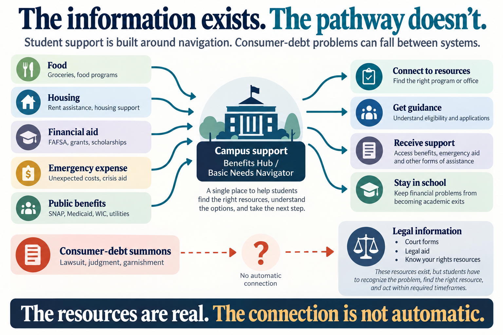

Sam — hypothetical
A part-time student gets a card, falls behind, receives a summons, and can move into judgment and garnishment while still trying to finish school.
Follow the legal pathway →I spent a year as an AmeriCorps Benefits Hub Coach helping students navigate the problems that can knock someone out of school. At the same time, I was a student carrying a consumer judgment of my own.
As a Benefits Hub Coach, much of the work was triage: food, rent, utilities, financial aid, emergency expenses. Those problems were visible and immediate. Some students also had no reliable parent or family member to call when a system became confusing or frightening.
Consumer credit can smolder. A missed payment may not threaten enrollment today. Neither may the next collection letter. Then a summons arrives. Or a judgment. Or a garnishment.

A part-time student gets a card, falls behind, receives a summons, and can move into judgment and garnishment while still trying to finish school.
Follow the legal pathway →I answered my lawsuit. A judgment was entered in 2019. Years later, collection continued. My path ultimately ended in bankruptcy while I was completing my degree.
See the documented chronology →Beginning January 1, 2027, Washington’s new consumer-debt default-judgment law requires a plain-language notice warning about default, garnishment, interest, long-term judgment enforcement, and a 211 legal-help referral before default judgment can be entered in covered cases.
The next question: when the consumer is also an enrolled student, does that legal handoff connect back to the student-support system?
What decision makers can testThe possible intervention can be modest: recognize a court trigger, tell the student that time may matter, and make a warm referral to qualified legal help while campus support continues addressing food, housing, transportation, emergency aid, and other retention risks.